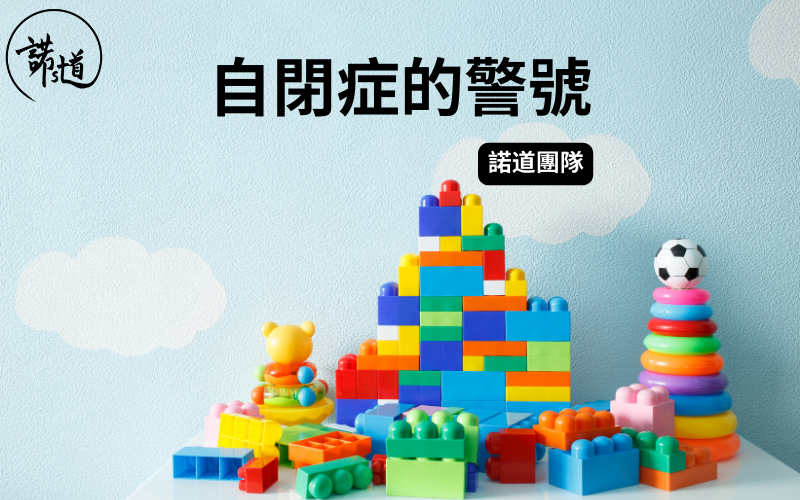

⾃閉症的警號
撰文：諾道團隊
已更新：12-06-2024

⾃閉症譜系障礙 (Autism Spectrum Disorder) 的部分徵兆早在嬰幼兒時期出現，認識這些⾃閉症的警號有助家長為孩⼦把握⿈⾦期，讓⼦女盡早得到適切幫助，減少往後成長路上⾯對的困難和挑戰。
1. 1歲還未穩定地對⾃⼰的名字作出回應
2. 過了1歲還未懂「⼿指指」去指出身邊及遠處的事物，藉此與⼈分享⾃⼰的興趣或正注視的事物，例如向媽媽指著⾺路上⾏⾛的巴⼠
3. 1歲仍甚少留意及回應別⼈指著的⼈事物
4. 1歲半仍甚少表現出簡單的假想遊戲⾏為，例如：⽤杯扮飲⽔、⽤匙羹扮食飯
5. 語⾔發展遲緩，例如⼀歲半仍然未有或只有少量單字
6. 像鸚鵡般重複別⼈的說話
7. 傾向選擇獨處，對與⼈交流的興趣或意慾較低
8. 極度沉迷於某⼀兩樣興趣，例如：數字、英⽂字母、地鐵站名、巴⼠路線
9. 有⾃轉、揈(fing)⼿/頭的⾏為
10. 較固執和堅持某些⾏事⽅式，容易因⼩改變⽽情緒爆發，例如：只⾏某⼀條路線回家、玩具堅持某⼀種玩法
11. 重複及刻板⾏為，例如排列玩具⾞或積⽊
12. 難以與⼈維持恰當的眼神接觸
13. 對味道、聲⾳、氣味等感官有過⼤/過少的反應，例如：抗拒某些質感的食物、對痛楚的反應過低
如果你的孩⼦經常且持續地出現以上某些特徵，建議你盡快找專業⼈⼠為孩⼦作詳細評估。
如有任何問題或需要幫忙，歡迎你跟諾道團隊聯絡，我們樂意為你提供協助。